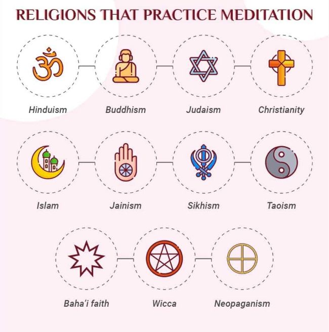

Meditation is actually a vage term used as a practice (or set of practices) for training attention, awareness, or reflection. With the aim of achieving mental clarity and emotional calm. For this particular training we will be focusing on using buddahism techniques:
basic breathing practices What to pay attention to while meditating
*
This is a practice that happens in all reilgions not just buddahism.

source:
https://mind.help/topic/meditation/